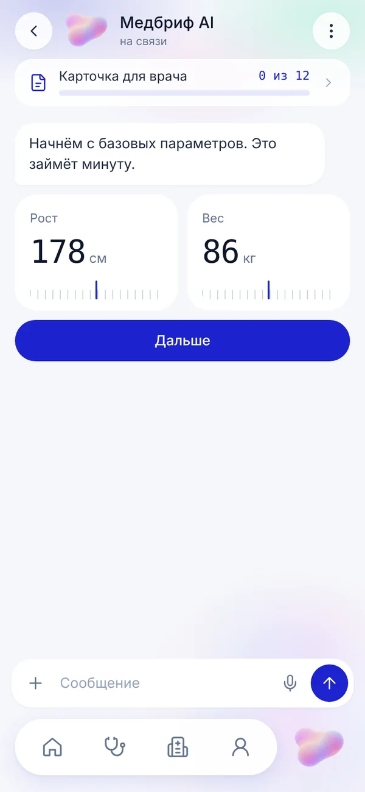
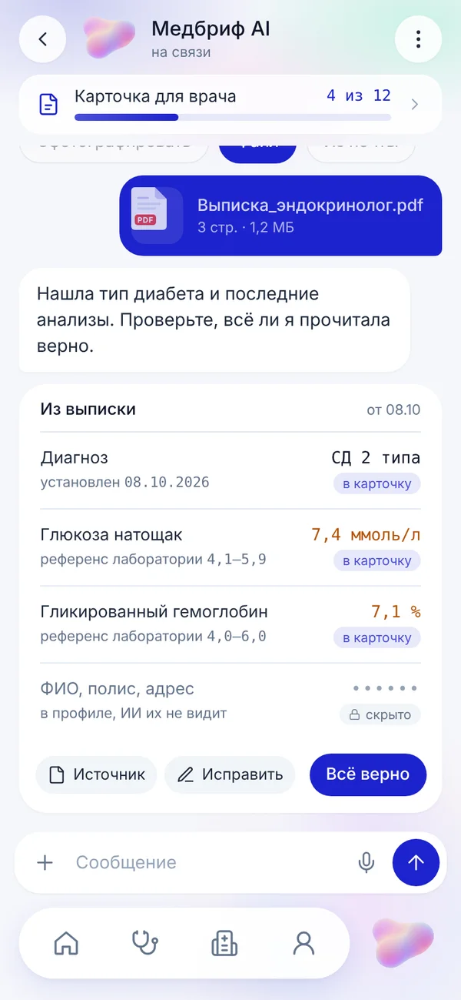
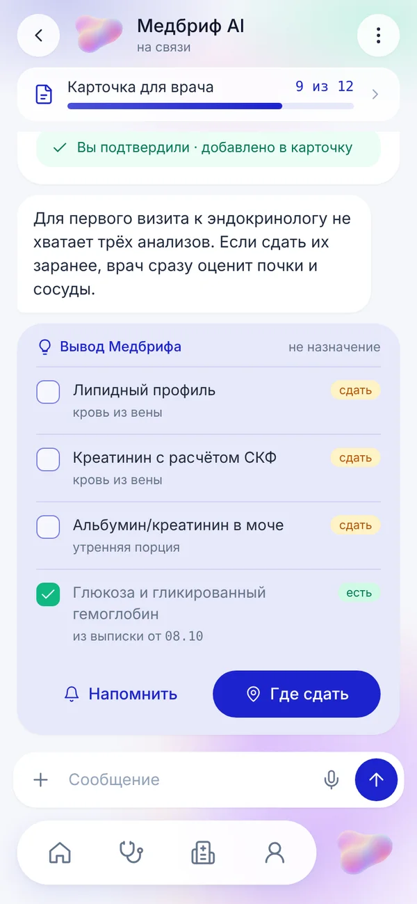
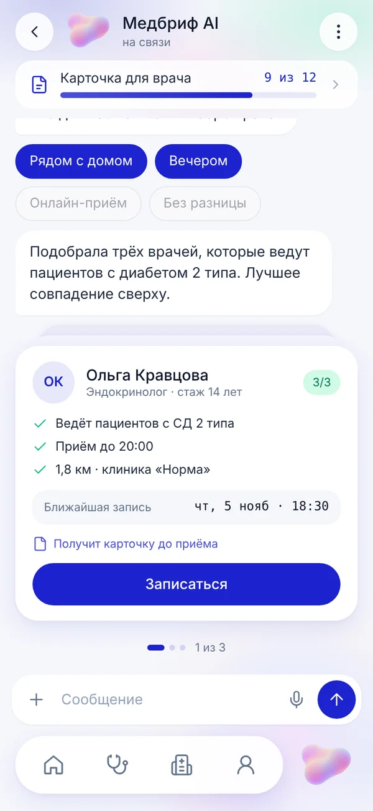
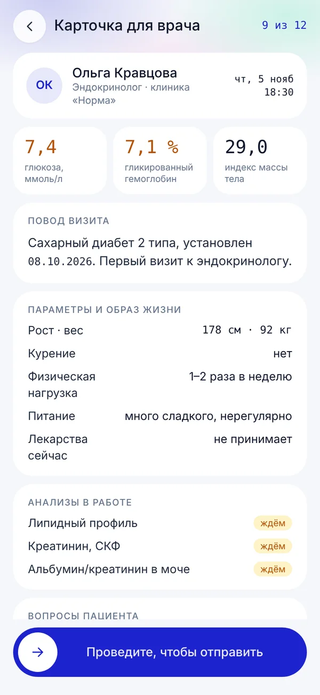
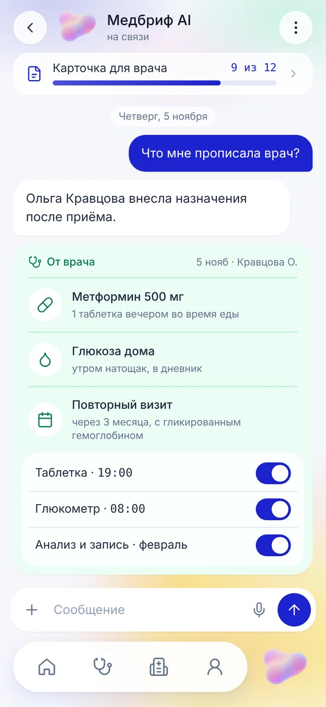
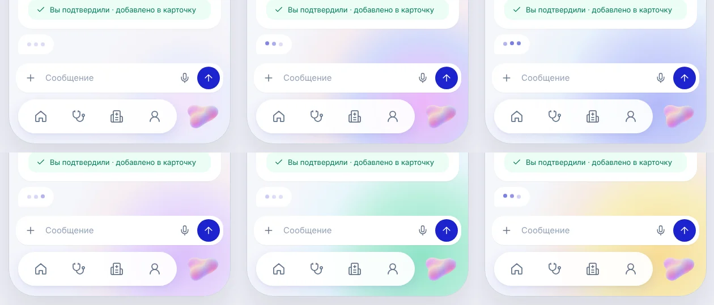

ИИ-ресепшн, который готовит пациента к визиту, чтобы врач лечил, а не опрашивал
Пациент в чате передаёт всё о своём здоровье, ИИ собирает из этого краткую карточку для врача, подсказывает, какие анализы сдать заранее, и подбирает специалиста.
Это живой прототип: сценарий проигрывается сам, шаги и перезапуск — в меню ⋮ в правом верхнем углу.
Шесть терминов проекта
Данные о здоровье лежат везде, кроме кабинета врача
Медбриф — мобильное приложение для пациентов, которые регулярно ходят к врачам: хронические состояния, недавно поставленный диагноз, наблюдение. Разделы приложения: главная, мои врачи, клиники, профиль. В центре — персональный чат с ИИ, ему и посвящён кейс.
Сейчас путь пациента выглядит так: анализы приходят на почту, в мессенджер или на бумаге, выписки лежат в разных клиниках, свои параметры человек помнит частично. На приёме врач тратит время на одни и те же вопросы, а если важного анализа нет, отправляет досдавать и звать на повторный визит.
Бизнес-модель: клиника платит за пациента, пришедшего через приложение. Клинике выгодно, чтобы пациент приходил подготовленным: врач принимает больше людей без потери качества, а повторные «пустые» визиты не съедают расписание.
Всё сводится к тому, насколько подготовлен пациент до приёма
Главная метрика — доля первичных визитов, к которым карточка для врача собрана и отправлена заранее. Две вторичные показывают, что подготовка действительно меняет приём.
Целевые значения — проектная модель на первые три месяца пилота. Базу замеряем на пилоте в одной клинике до включения карточки.
Ограничения, которые задают всю механику
- ИИ не ставит диагнозы и ничего не назначает. Он работает как ресепшн, который знает, что спросить и что подготовить.
- Персональные данные хранятся отдельно, ИИ видит только обезличенные клинически значимые параметры.
- В карточку для врача попадает только то, что пациент подтвердил.
- Правила по анализам и вопросам берутся из клинических рекомендаций и проверяются врачами до запуска.
Четыре гипотезы, каждая привязана к метрике
Отправная точка — путь пациента выше и разбор того, как сейчас устроены похожие решения. Гипотезы ниже — то, что проверяем на тесте прототипа и потом на пилоте.
Ни один тип решения не связывает пациента и врача до приёма
Разобрал четыре типа продуктов, с которыми пациент уже сталкивается. Таблица — моя оценка типового поведения каждого типа, а не конкретных сервисов.
| Тип решения | Собирает анамнез до визита | Знает, каких анализов не хватает | Передаёт врачу сводку | Хранит документы из разных мест |
|---|---|---|---|---|
| Личный кабинет клиники | нет | нет | частично, внутри клиники | только свои документы |
| Агрегатор записи к врачу | нет | нет | нет | нет |
| Чат-бот проверки симптомов | частично, для себя | нет | нет | нет |
| Медкарта-хранилище | нет | нет | по ссылке, без отбора | да |
| Медбриф | да | да | да, только нужное | да |
Выбрал чат, потому что только он умеет задать следующий вопрос
Анкета перед визитом
Проще всего сделать, но одинакова для всех. Длинная форма отпугивает, а короткая не собирает нужное для конкретного диагноза.
Медкарта с загрузкой файлов
Решает хранение, но не подготовку: врач получает папку документов и всё равно ищет нужное сам.
Чат-ресепшн с навыками
Задаёт вопросы под повод визита, достаёт данные из документов, отбирает нужное врачу. Дороже в разработке, но двигает все три метрики.
Шесть правил, по которым принимались решения на экранах
Ресепшн, а не врач
ИИ спрашивает и готовит. Любой его вывод помечен «не назначение».
Цвет — это источник данных
Белая карточка — факт из документа, лиловая — вывод ИИ, мятная — назначение врача, жёлтые метки — «нужно сдать».
Врачу уходит только подтверждённое
После распознавания пациент нажимает «Всё верно» или правит. У каждого факта есть источник.
ИИ не видит, кто вы
ФИО и полис показаны в карточке как скрытые. Принцип обезличивания виден прямо в интерфейсе.
Ответ одним касанием
Где вариантов немного, ответы приходят чипами. Печатать нужно только свой вопрос.
Система показывает, что делает
Маскот и цвет угла экрана меняются, когда ИИ думает, читает документ или сохраняет данные.
Персональные данные и медицинские живут отдельно, а встречаются только у врача
Каждое сообщение пациента проходит через шлюз: персональное уходит в профиль, клинически значимое — в медданные под обезличенным идентификатором. ИИ работает только со вторым слоем и с каждым фактом делает одно из трёх: фиксирует, делает вывод или отсеивает.
Навыки — это набор правил под конкретный повод визита: что спросить, какие анализы нужны, какие факты важны врачу. Поводов тысячи, поэтому логика не зашита в интерфейс. Интерфейс одинаково показывает результат любого навыка тремя типами карточек.
Сценарий из шести шагов: от знакомства до назначений врача
Весь путь проходит в одном чате. Прототип проигрывает его как сквозную анимацию, по шагам можно переходить из меню в правом верхнем углу.


- у каждого факта метка «в карточку» и источник документа;
- ФИО и полис показаны скрытыми: ИИ их не видит;
- «Источник» и «Исправить» — врачу уходит только подтверждённое.




Маскот показывает, чем сейчас занята система
Лицо ассистента — перламутровое облако без лица и рук: персонаж передаёт состояние движением и не выглядит детским в медицинском контексте. Состояния привязаны к событиям приложения, а правый нижний угол экрана заливается цветом задачи.

Не шесть экранов, а система состояний
Отдельно продуманы пограничные случаи: пациент не помнит диагноз, ИИ ошибся при распознавании, у врача нет всех совпадений, данные не относятся к визиту, запись уже подтверждена. Прототип работает как веб-приложение с главного экрана телефона, его можно пройти руками.
Следующий шаг — модерируемый тест прототипа на телефоне
Тестируем две стороны: пациентов, которые проходят сценарий, и врачей, которые читают итоговую карточку. Респондентов подбираем среди взрослых с хроническими состояниями или диагнозом, поставленным в последний год, и среди эндокринологов и терапевтов, которые ведут таких пациентов.
- Пройти опрос и рассказать, куда ушли ответы.
- Загрузить выписку и проверить, что ИИ прочитал верно.
- Найти, каких анализов не хватает, и поставить напоминание.
- Выбрать врача и объяснить, почему этого.
- Для врача: по карточке за минуту назвать повод визита, ключевые показатели и чего ещё ждём.
Критерии успеха
- Пациенты завершают задачи 1–4 без подсказок модератора.
- Пациенты отличают вывод ИИ от факта из документа и от назначения врача.
- Врач находит повод, показатели и недостающие анализы в карточке без прокрутки назад.
- Никто из участников не воспринимает вывод Медбрифа как диагноз.
Проектная модель эффекта и что будем мерить
визитов с карточкой до приёма — North Star пилота.
времени приёма на сбор анамнеза — замер хронометражем на пилоте.
первичных визитов без отправки досдавать анализы.
Подтверждённых данных после запуска пока нет. Значения выше — модель, которую проверяем на пилоте.